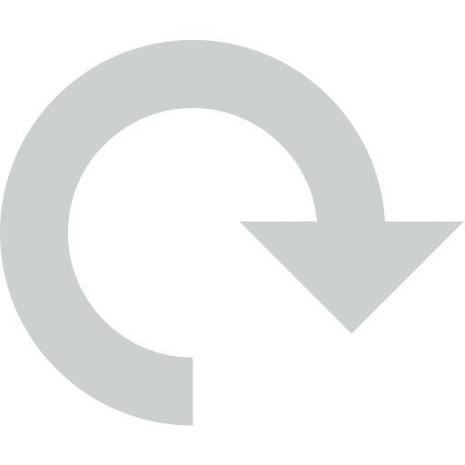
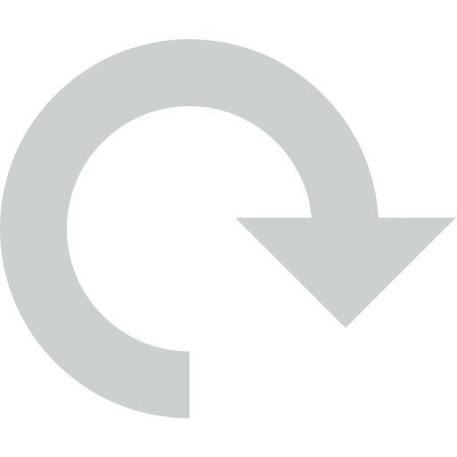

how to centre a div
W3Schools
https://www.w3schools.com
To horizontally center a block element, use margin: auto;. Setting the width of the element will prevent it from stretching out to the edges of its ...
Center Text
Centre Align Elemenrs
Center an image
Center with line-height
Reddit - r/webdev
100+ comments- 9 months ago
Here are what comes to my mind: 1 The classic position: absolute; left: 50%; top: 50%; transform: translate(-50%, -50%); Cons: transform cannot change the ...
HubSpot Blog
https://blog.hubspot.com>website>center
9 Jul 2020 — To center a div vertically on a page, you can use the CSS position property, top property, and transform property...
MDN Web Docs
https://develooper.mozilla.org
11 Mar 2025 — Then set align-items to center for vertical centering (on the block axis) and justify-content to center for horizontal centering (on the inline ...

CSS - Tricks
https://css-tricks.com
You can center inline elements horizontally, within a block-level parent element, with just: .center { text-align: center; }...
freeCodeCamp
https://www.freeCodeCamp.com
27 Apr 2022 — In this section, we'll see how we can use the CSS Flexbox property to center an element horizontally, vertically, and at the center of a page/container....
Built In
https://builtin.com
9 Apr 2024 — 5 Methods to Center a Div Horizontally and Vertically in CSS · 1. Display: Flex · 2. Display: Grid · 3. Position: Absolute and Transform: ...
W3Schools
https://www.w3schools.com
To horizontally center a block element, use margin: auto;. Setting the width of the element will prevent it from stretching out to the edges of its ...
Center Text
Centre Align Elemenrs
Center an image
Center with line-height
Reddit - r/webdev
100+ comments- 9 months ago
Here are what comes to my mind: 1 The classic position: absolute; left: 50%; top: 50%; transform: translate(-50%, -50%); Cons: transform cannot change the ...
HubSpot Blog
https://blog.hubspot.com>website>center
9 Jul 2020 — To center a div vertically on a page, you can use the CSS position property, top property, and transform property...
MDN Web Docs
https://develooper.mozilla.org
11 Mar 2025 — Then set align-items to center for vertical centering (on the block axis) and justify-content to center for horizontal centering (on the inline ...
CSS - Tricks
https://css-tricks.com
You can center inline elements horizontally, within a block-level parent element, with just: .center { text-align: center; }...
freeCodeCamp
https://www.freeCodeCamp.com
27 Apr 2022 — In this section, we'll see how we can use the CSS Flexbox property to center an element horizontally, vertically, and at the center of a page/container....
Built In
https://builtin.com
9 Apr 2024 — 5 Methods to Center a Div Horizontally and Vertically in CSS · 1. Display: Flex · 2. Display: Grid · 3. Position: Absolute and Transform: ...
People also search for
How to center without CSS
How to center a div meme
How to center a div horizontally
How to center a div using flex
Center a div inside a div
How to center a div